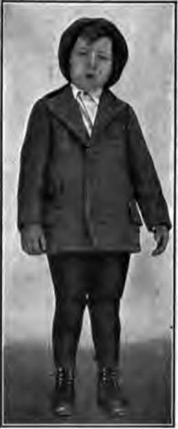
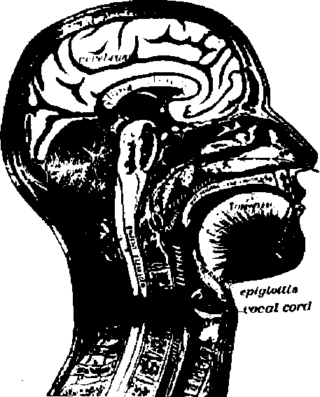
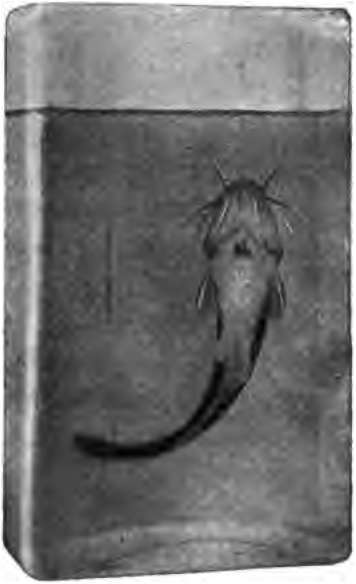

Air And Health. Continued
Description
This section is from the book "The Human Body And Health", by Alvin Davison. Also available from Amazon: The Human Body and Health.
Air And Health. Continued
The following simple experiment may be tried to show that impure air is heavy and tends to keep near the floor. Breathe two or three times into each of two pint or quart bottles with mouths about an inch in diameter. Then hold one with mouth downward and let the other remain upright. At the end of two minutes, the first one will be free of impure air, so that a lighted stick thrust into it will continue to burn. After ten minutes the upright bottle will contain so much impure air that the lighted stick thrust into it will be at once extinguished.
Animals cannot live and nothing can burn where there is much carbon dioxide.
Several windows raised two or three inches from the bottom and pulled down as much from the top on the same side of the room, give the best ventilation where there is no special provision for ventilating. Drafts must be kept off the children by placing a board slanting inward at the bottom of the window. The fresh air enters at the bottom, sweeps the impure air along to the other side of the room, where it is carried upward and then across beneath the ceiling to the open windows.
A recess of five minutes may be taken every hour when the windows and doors may be opened wide to admit fresh air. Care should be exercised that the room is not made too cold. Children can do nearly twice as much work in a room well ventilated as in one poorly ventilated.
Ventilation In The Home
The tired, dull, unhappy feeling which often comes on people, especially in the winter season, is frequently the result of impure air. If the home is not heated by hot air brought by pipes from a furnace supplied with a fresh air duct leading from the outer air, a window should be kept open a little at the top and bottom in the living room.
In the sleeping rooms, even in the coldest weather, one window should be open at least a foot, both at the top and bottom. Drafts should not blow on the sleeper. Plenty of covers must be used, and a cap may be worn to keep the head warm. If all people lived in fresh air, there would be but few cases of consumption, and much less sickness from other diseases.
Colds In The Head
Most children during the winter catch cold in the head. The air passages in the nose become filled up with a white substance called mucus. The glands in the mucous membrane lining the nose form this.
These head colds, or catarrh, are usually due to wet feet, sitting in drafts, staying in rooms with dry and impure air, sleeping with the windows closed, or breathing, through the mouth instead of the nose. The best remedy is to avoid what caused the evil. A little vaseline put into the nostrils and snuffed up will give some relief. Never use catarrh powders without consulting the family physician. Many of them contain cocaine or other harmful drugs. They may give relief for a short time, but are likely to ruin the health.
Adenoids Or Nose Sponges
Adenoids are spongy growths of the mucous membrane, in the back part of the nose. They are present in very many children. They prevent free nose breathing by clogging the air passages, and may cause partial deafness by shutting up the opening of the tube leading from the throat to the ear.
Abundant adenoid growths sometimes injure the mind by pressing on the blood vessels leading to the brain. Frequent colds in the head, nasal tones, mouth breathing, projecting upper jaw, and inattention are some of the signs that adenoid growths are present. They are easily removed by a physician.
The tonsils which are small useless bodies, one on either side of the tongue, sometimes become much enlarged. They should then be removed as they permit disease germs to enter through them to the blood.
Effect Of Alcohol On The Lungs
The habitual use of alcohol in any form is liable to weaken the lungs so that disease germs can readily get a foothold in them. Pneumonia is not only more likely to attack a drinker than an abstainer, but is more likely to kill him.
Fig. 74. Expression of a boy with adenoids. He kept his mouth open day and night.
Fig. 75. Vertical section through the head to show adenoids. Arrows show the course of the air breathed through nose.
Much use of alcoholic drink renders the lungs an especially easy prey to the bacteria of tuberculosis. In many sanatoria for consumptives, there is a large number of patients who have been accustomed to use strong drink.
The International Congress at Paris declared that one way to fight tuberculosis is to put down the use of alcohol.
Tobacco And The Lungs
Tobacco has a much less serious effect upon the lungs than alcoholic drink. Habitual users of tobacco, while young, have been known to gain one fourth less in chest girth during four years than those not using the weed. The smallness of the chest would, of course, prevent the full development of the lungs.
In smoking cigarettes, the habit of inhaling the smoke is a bad one, because it allows the nicotine to get into the lungs. Here much more of it can be absorbed than in the throat and mouth, since the thin walled capillaries lie very near the surface on which the poison lodges.
Fig. 76. This fish died in a half hour from the poison of three cigarettes being placed in its swimming tank.
To show how quickly the poison is absorbed into the blood, the following experiment may be performed: The tobacco from three cigarettes is boiled a few minutes in a cup of water to draw out the nicotine. The poisoned water is then poured into a quart of pure water containing a small fish. The narcotic effect of the tobacco causes the fish to go to sleep in about twenty minutes, and about ten minutes later death results.
The poison of the tobacco passes into the fish through the gills on either side of the head. They consist of three or four stiff arches bearing fine threads of tissue filled with thin walled blood vessels. The gills are the breathing organs of the fish.
Practical Questions
1. Why should you try to prevent dust in sweeping? 2. Why are rugs better than nailed-down carpets? 3 How much air do the lungs hold? 4. How much air is taken in by an ordinary:
Continue to: